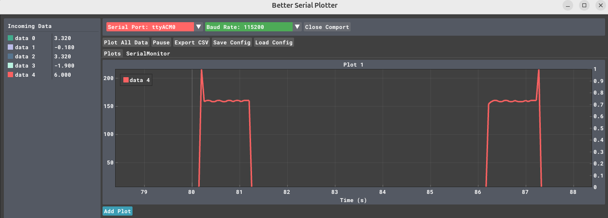

Energy
The following picture from https://doi.org/10.3390/s18072104 depicts a typical sensor working scenario, where a node alternates different activities each with a different power consumption

ESP32 Sleep Modes
ESP32 supports two major power saving modes: Light-sleep and Deep-sleep. There are several wakeup sources in the sleep modes. The following are excellent sources of information to understand how to ESP32 Sleep Modes and Their Power Consumption.
- Insight Into ESP32 Sleep Modes and Their Power Consumption
- ESP32 Deep Sleep Mode
- ESP32 Deep Sleep with Arduino IDE and Wake Up Sources
Powering the ESP32
To power the ESP32 you can use several methods
The ESP32 works at 3.3V. You can apply 5V to the Vin and an internal voltage regulator drops it down to 3.3V, but this costs energy because it is because a linear regulator that converts the excess voltage into heat.
Tip
if you don't need 5V in you project, use 3.3V, it will save energy. However, finding suitable batteries is not easy!
if the battery does not exceed 3.6V as in the LiFePO4, you can connect the battery to the 3.3V and bypass the voltage regulator
How to measure energy consumption
In the following example, the LOAD is our ESP32 and we use the INA219 connected to an Arduino UNO to measure the power consumption. The same can be obtained using another ESP32 instead of the UNO, but remember the correct pins for SDA (default is GPIO 21) SCL (default is GPIO 22) (See the schematics)
{kind=link}
- Connect board VIN (red wire) to Arduino 5V if you are running a 5V board Arduino (Mega, etc.). If your board is 3V, connect to that instead.
- Connect board GND (black wire) to Arduino GND
- Connect board SCL (white wire) to Arduino SCL
- Connect board SDA (blue wire) to Arduino SDA
- Connect Vin+ to the positive terminal of the power supply for the circuit under test
- Connect Vin- to the positive terminal or lead of the load
// use https://github.com/nathandunk/BetterSerialPlotter to visualize the data
#include <Arduino.h>
#include <Wire.h>
#include <Adafruit_INA219.h>
Adafruit_INA219 ina219;
void setup(void)
{
Serial.begin(115200);
while (!Serial) {
// will pause Zero, Leonardo, etc until serial console opens
delay(1);
}
uint32_t currentFrequency;
Serial.println("Hello!");
// Initialize the INA219.
// By default the initialization will use the largest range (32V, 2A). However
// you can call a setCalibration function to change this range (see comments).
if (! ina219.begin()) {
Serial.println("Failed to find INA219 chip");
while (1) { delay(10); }
}
// To use a slightly lower 32V, 1A range (higher precision on amps):
//ina219.setCalibration_32V_1A();
// Or to use a lower 16V, 400mA range (higher precision on volts and amps):
//ina219.setCalibration_16V_400mA();
Serial.println("Measuring voltage and current with INA219 ...");
}
void loop(void)
{
float shuntvoltage = 0;
float busvoltage = 0;
float current_mA = 0;
float loadvoltage = 0;
float power_mW = 0;
shuntvoltage = ina219.getShuntVoltage_mV();
busvoltage = ina219.getBusVoltage_V();
current_mA = ina219.getCurrent_mA();
power_mW = ina219.getPower_mW();
loadvoltage = busvoltage + (shuntvoltage / 1000);
Serial.print(busvoltage);
//Serial.print(",");
Serial.print("\t");
Serial.print(shuntvoltage);
//Serial.print(",");
Serial.print("\t");
Serial.print(loadvoltage);
//Serial.print(",");
Serial.print("\t");
Serial.print(current_mA);
//Serial.print(",");
Serial.print("\t");
Serial.println(power_mW);
//Serial.println("");
/*
delay(50);
}
/*
ESP32 Deep Sleep Mode Timer Wake UP
http:://www.electronicwings.com
*/
#define Time_To_Sleep 5 //Time ESP32 will go to sleep (in seconds)
#define S_To_uS_Factor 1000000ULL //Conversion factor for micro seconds to seconds
RTC_DATA_ATTR int bootCount= 0;
void setup() {
Serial.begin(115200);
delay(1000); //Take some time to open up the Serial Monitor
//Increment boot number and print it every reboot
++bootCount;
Serial.println("Boot number: " + String(bootCount));
//Set timer to 5 seconds
esp_sleep_enable_timer_wakeup(Time_To_Sleep * S_To_uS_Factor);
Serial.println("Setup ESP32 to sleep for every " + String(Time_To_Sleep) +
" Seconds");
//Go to sleep now
esp_deep_sleep_start();
Serial.println("This will not print!!"); // This will not get print,as ESP32 goes in Sleep mode.
}
void loop() {} // We don't need loop as ESP32 will initilize each time.
We use Better Serial Pltter to visualize the data.

exercise
Write a simple code that mimics the diagram at the beginning of this section of a typical sensor working scenario and measure the consumption of each activity